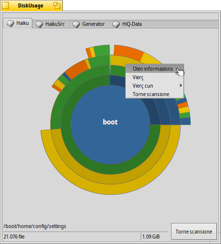

DiskUsage (Utilizazion dal disc)
DiskUsage (Utilizazion dal disc)
| Deskbar: | ||
| Posizion: | /boot/system/apps/DiskUsage | |
| Impostazions: | ~/config/settings/DiskUsage |
DiskUsage al mostre in maniere grafiche ce mût che al ven doprât il spazi sul to volum.
Un strument util par rispuindi ae domande: "Dulà isal lât dut il spazi dal gno disc fis?".
Apene dopo vêlu inviât, DiskUsage al mostre dome un barcon vueit, cun tantis schedis parsore tancj e son i volums montâts. Tu varâs di sielzi chel che ti interesse e fâ clic su par tacâ a scrusignâ tal disc. Pai discs grancj al podarès tirâle a dilunc... Intant che tu spietis, tu puedis passâ a une altre schede e tacâ a esplorâ chel volum o iniziâ il procès di scansion ancje lì.
Nol è conseât fâ partî tancj procès di scansion contemporaniis sul stes disc fisic, par vie che il ripetût spostament des testinis de unitât al varà l'efiet di sprolungjâ il timp di spiete.

I cerclis concentrics a rapresentin nivei diferents te gjerarchie dal filesystem. Chi parsore, il cercli tal mieç al rapresente la cartele /boot/home/ . Ogni segment dal anel subite fûr chel cercli al è un file o une cartele sot di /boot/home/. Ogni segment ancjemò plui fûr ti puarte a un nivel ancjemò plui profont te gjerarchie dai file. Tu podaressis vê bisugne di ridimensionâ il barcon par sestâ lis cartelis une vore profondis.
- Se la rapresentazion grafiche di un file o di une cartele e sta jenfri 2° (cirche) di un cercli, al ven escludût de visualizazion.
- Il numar di file che al ven segnât par une cartele al inclût ancje i file tes sot-cartelis. Une cartele e conte come un file.
- DiskUsage al ignore i colegaments simbolics.
Come che tu spostis il mouse parsore di un segment, lis informazions su chel file o cartele a vegnin fûr te sbare di stât in bas.
Fâ clic diestri suntun segment al ufrìs un menù contestuâl cun , (cul Tracker), une altre aplicazion adate o chê precise cartele.
Fâ clic di çampe suntun segment al rint chel file/cartele il cercli centrâl.
Fâ clic di çampe sul cercli centrâl ti fâs tornâ sù di un nivel.
Tu puedis strissinâ i file e lis cartelis di DiskUsage suntune altre aplicazion o sul Scritori o altris barcons dal Tracker par copiâlis. Al contrari, molant volums e cartelis sul barcon di DiskUsage tu ingrandirâs subite a chel nivel, fasintju deventâ il gnûf cercli centrâl.
Tu puedis ancje doprâ la zonte (add-on) dal Tracker dal menù contestuâl di cualsise cartele par inviâ DiskUsage cun chê particolâr posizion.